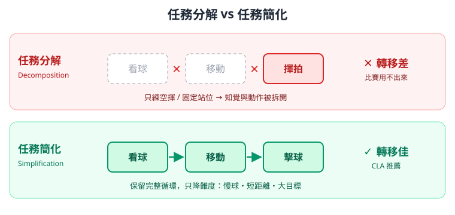
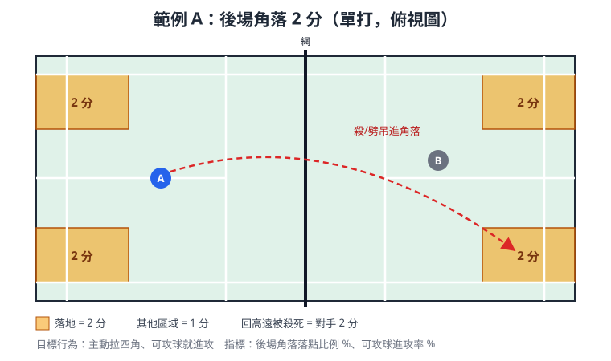
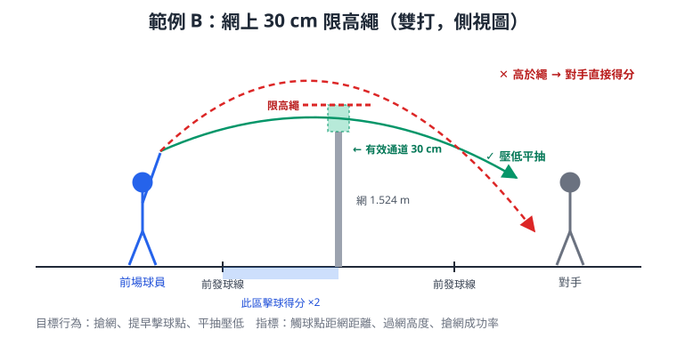

教練研究 · 整理日期 · 依原研究整理，不是原文全文
12 限制導向動作學習（CLA）— 羽球教學版
更新：2026-11-13｜關聯：06 運動行為、07 動作控制、08 教練實務
第 1 課：動作從哪裡來？

| 限制 | 羽球例子 | 教練能改嗎？ |
|---|---|---|
| 個體 | 身高、力量、疲勞、經驗 | 部分（體能、疲勞狀態） |
| 任務 | 規則、得分、器材、限拍數 | 最容易改 |
| 環境 | 場地大小、網高、對手、比分 | 容易改 |
重點：教練不給標準答案，而是設計限制。
第 2 課：關鍵詞
| 詞 | 一句話 | 羽球例子 |
|---|---|---|
| 可供性 Affordance | 環境給「你」的行動機會 | 半場高球 = 可殺機會 |
| 知覺—動作耦合 | 看與打不能拆開 | 讀對手拍面 → 啟動 |
| 代表性學習設計 RLD | 練習要像比賽 | 真人餵球 > 發球機 |
| 功能性變異 | 變異 ≠ 錯誤 | 每拍步法不同，但都到位 |
| 外在焦點 | 注意結果，不注意身體 | 「打到那個圈」>「手肘抬高」 |
第 3 課：練法對比

| 面向 | 傳統（線性） | CLA（非線性） |
|---|---|---|
| 目標 | 標準動作 | 有效解法 |
| 結構 | 分解 → 組合 | 簡化的完整情境 → 加難 |
| 教練 | 講解、糾正 | 設計規則、觀察 |
| 變異 | 消除 | 利用 |
| 評估 | 動作外形 | 結果 + 換情境仍有效 |
第 4 課：教練設計流程

限制操控表
| 改什麼 | 怎樣改 | 練出什麼 | 量什麼 |
|---|---|---|---|
| 得分 | 後場角落 2 分 | 拉四角 | 角落落點 % |
| 擊球種類 | 只准平抽 / 網前 | 專項技術 | 目標技術次數 |
| 限拍數 | 3 拍內必攻 | 搶攻、提早擊球 | 第 3 拍進攻率 % |
| 時間 | 多球間隔 1.2 → 0.9 s | 啟動、還原 | 到位時間 |
| 場地 | 縮窄寬度 | 前後移動 | 落點深度 cm |
| 網高 | 網上 30 cm 拉繩 | 平抽壓低 | 過網高度 |
| 比分 | 18:20 開局 | 壓力決策 | 失誤率 |
| 個體 | 疲勞後練技術 | 疲勞下穩定 | 落點誤差變化 |
| 器材 | 短拍、慢球 | 兒童完整揮擊 | 連續對打拍數 |
第 5 課：範例課表
範例 A：後場進攻（單打）

| 項目 | 內容 |
|---|---|
| 時間 | 3 × 7 分鐘，輪換對手 |
| 進階 | 進攻後下一拍必須網前跟進 |
範例 B：雙打封網

| 項目 | 內容 |
|---|---|
| 時間 | 4 × 5 分鐘 |
| 觀察 | 兩人前後/左右站位變化（Passos 2022） |
範例 C、D
| C：預判 | D：兒童入門 | |
|---|---|---|
| 限制 | 真人餵球，同準備動作混 2 種球路 | 短拍 + 慢球 + 窄場 + 低網 |
| 目標 | 讀出直線/對角 | 完整「看—動—打」 |
| 指標 | 啟動方向正確率、啟動時間 | 連續對打拍數 |
| 禁止 | 用發球機取代 | 先教分解揮拍 |
| 依據 | Abernethy 1987、Hagemann 2006 | Nor Azmi 2023、Buszard 2016 |
常見錯誤
| 錯誤 | 修正 |
|---|---|
| 同時改 3+ 個限制 | 一次 1–2 個 |
| CLA = 只打比賽 | 限制要對準目標行為 |
| 完全不給指導 | 初學者可配示範、比喻 |
| 太難全失敗 | 成功率保持 60–80% |
| 只看結果 | 同時監測肩、膝負荷 |
文獻
A = 已在文獻總目錄核對｜B = 經典，未逐字核對｜C = 需查核卷期
| 文獻 | 一句話 | 信度 |
|---|---|---|
| Newell (1986), Motor development in children | 三類限制模型原典 | B |
| Newell, Liu, Mayer-Kress 系列 | 學習的多時間尺度（見第 10 章） | A |
| Araújo et al. (2006), PSE 7 | 決策 = 知覺—動作耦合 | B |
| Chow et al. (2007), RER 77(3) | 非線性教學法 | B |
| Renshaw et al. (2010), PESP 15(2) | CLA 與體育教學 | B |
| Pinder et al. (2011), JSEP 33 | 代表性學習設計 | B |
| Renshaw et al. (2019), Routledge | CLA 教練手冊（入門首選） | B |
| Dieu et al. (2022), PESP | 羽球體育課組織設計 | A |
| Passos et al. (2022), Ecol. Psychol. | 頂尖雙打人際協同 | A |
| Nor Azmi et al. (2023), IJHMSS | 兒童羽球器材比例 | A |
| De Waelle et al. (2022), RQES | 情境資訊與預判 | A |
| Hülsdünker et al. (2021), Front. Hum. Neurosci. | 擊球聲加快反應 | A |
| Goode & Magill (1986), RQES 57(4) | 羽球發球：隨機 > 區塊練習 | B |
| Abernethy & Russell (1987), JSP 9 | 羽球專家早期預判 | B |
| Hagemann et al. (2006), JSEP 28 | 注意力引導提升預判 | B |
| Buszard et al. (2016), Sports Med 46 | 縮小器材/場地效果 | B |
| Alder et al. (2014)；Wrisberg & Liu (1991)；Lee et al. (2014) | 凝視、發球變異、網球非線性教學 | C |
DOI 見舊版：12_..._202611071015.md
可做的研究
| 題目 | 設計 | 依變項 |
|---|---|---|
| CLA vs 分解教學（中學生高遠球） | 2 組，8 週，前/後/保留/轉移 | 落點、比賽使用率 |
| 場地寬度 → 單打移動 | 受試者內，3 種場寬 | 移動距離、回合長度 |
| 兒童器材比例 | 2×2 | 揮拍角速度、成功率 |
| 雙打協同 × 規則限制 | 影片 + 相對相位 | 兩人間距、穩定度 |